← Back to Black & Gold Dispatch
Photo credits
Last updated: October 20, 2026
Black & Gold Dispatch only uses photos we're licensed to use. The photos on our home page come from Wikimedia Commons under the licenses shown below. Three of them are shown each week, and they change automatically every Monday; this page lists every photo we use. Each photo on the home page also has its own credit line. We cropped and resized them to fit the page. Where a photo is under a Creative Commons ShareAlike license, our cropped version is shared under that same license.
We don't use team, league, wire-service or stock-agency photos, and the photos aren't meant to suggest any endorsement by the photographers, the Pittsburgh Steelers or the NFL.
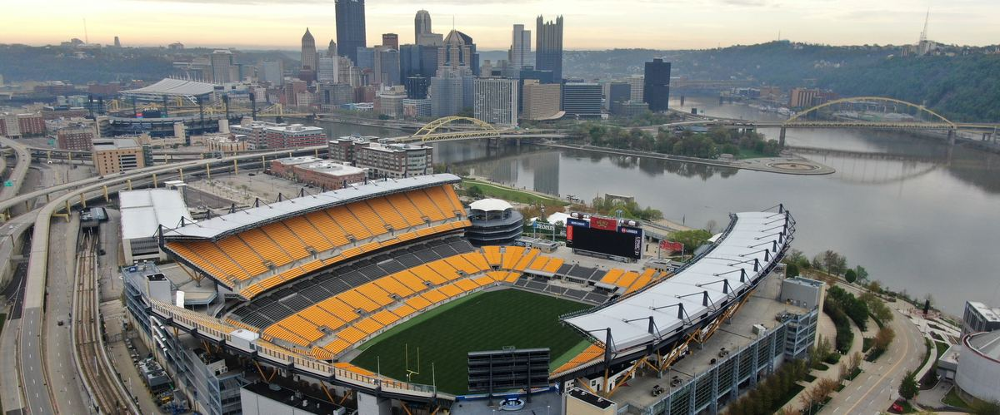
The stadium on the North Shore from the air, with downtown Pittsburgh behind it
By Steven W. Adams (Fo2grfr) · License: CC BY-SA 4.0
Source: Wikimedia Commons file page · Changes: Cropped to a 12:5 banner and resized to 1200 px.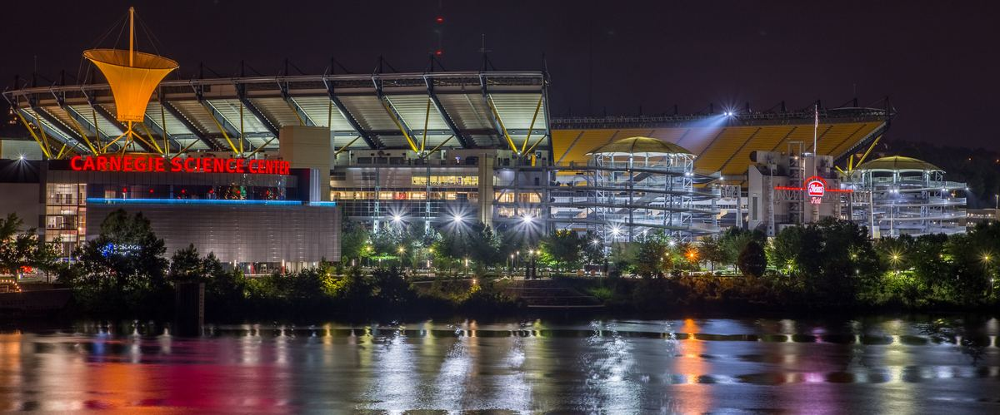
The stadium and Carnegie Science Center at night, across the Ohio River
By thederek412 · License: CC BY 2.0
Source: Wikimedia Commons file page · Original: Flickr · Changes: Cropped to a 12:5 banner and resized to 1200 px.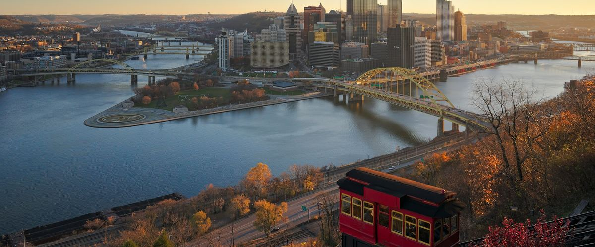
Downtown Pittsburgh from the Duquesne Incline in the morning
By Dllu · License: CC BY-SA 4.0
Source: Wikimedia Commons file page · Changes: Cropped to a 12:5 banner and resized to 1200 px.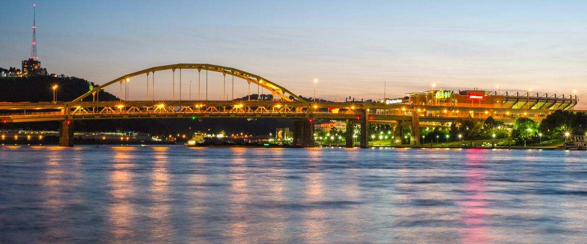
Fort Duquesne Bridge at dusk
By Nathaniel F · License: CC BY-SA 2.0
Source: Wikimedia Commons file page · Original: Flickr · Changes: Cropped to a 12:5 banner and resized to 1200 px.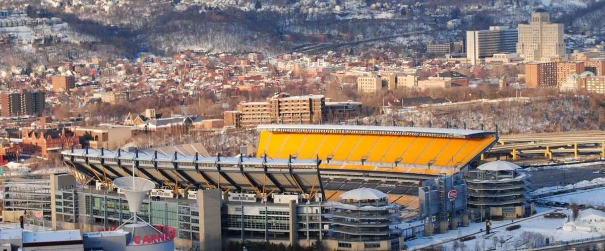
The stadium after a snowfall, seen from Mount Washington
By Asamudra · License: CC BY 3.0
Source: Wikimedia Commons file page · Changes: Cropped to a 12:5 banner and resized to 1200 px.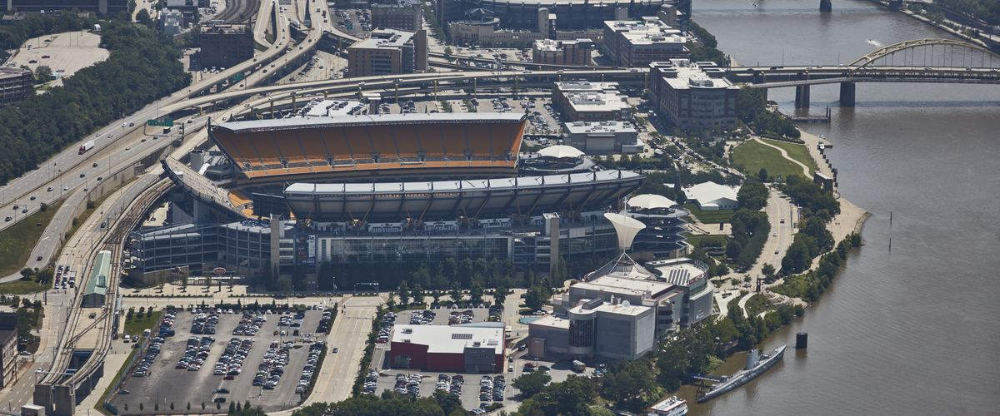
Aerial view of the North Shore stadium and the Allegheny River
By Carol M. Highsmith (Library of Congress) · License: Public domain
Source: Wikimedia Commons file page · Changes: Cropped to a 12:5 banner and resized to 1200 px.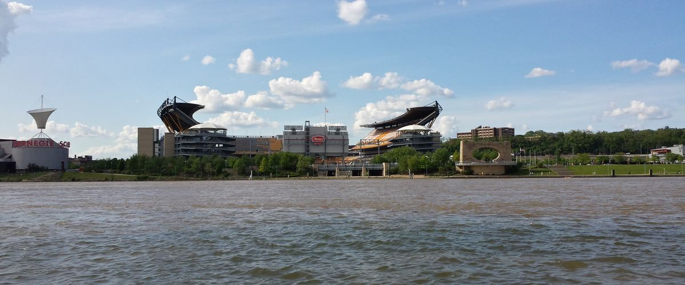
The stadium from across the Allegheny River
By Barry Wise · License: CC BY-SA 2.0
Source: Wikimedia Commons file page · Original: Flickr · Changes: Cropped to a 12:5 banner and resized to 1200 px.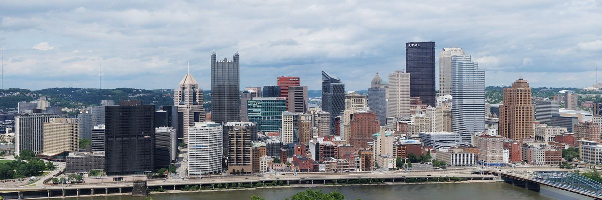
Downtown Pittsburgh skyline from Mount Washington
By Cbaile19 · License: CC0 1.0
Source: Wikimedia Commons file page · Changes: Cropped to a 3:1 banner and resized to 1200 px.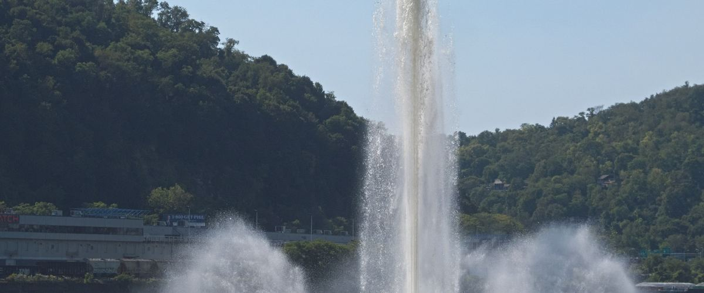
The fountain at Point State Park
By Cbaile19 · License: CC0 1.0
Source: Wikimedia Commons file page · Changes: Cropped to a 12:5 banner and resized to 1200 px.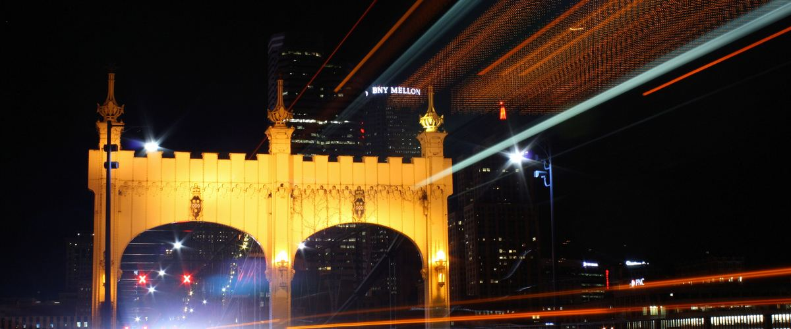
Smithfield Street Bridge at night
By Jmblough · License: CC BY-SA 4.0
Source: Wikimedia Commons file page · Changes: Cropped to a 12:5 banner and resized to 1200 px.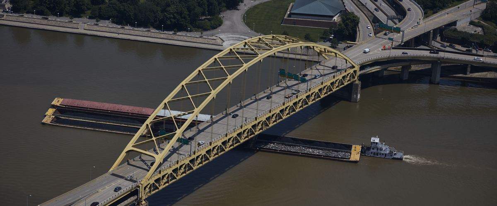
A tugboat pushing barges under the Fort Pitt Bridge
By Carol M. Highsmith (Library of Congress) · License: Public domain
Source: Wikimedia Commons file page · Changes: Cropped to a 12:5 banner and resized to 1200 px.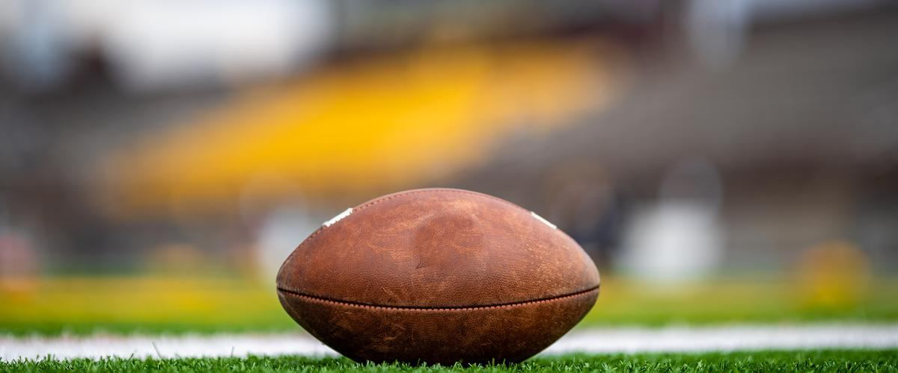
A football resting on the turf
By Erik Drost · License: CC BY 2.0
Source: Wikimedia Commons file page · Original: Flickr · Changes: Cropped to a 12:5 banner, resized to 1200 px, and a small embossed college mark on the ball retouched out.
The black-and-gold dividers on the home page are original graphics made by Black & Gold Dispatch. Spot a credit that's wrong? Email blackandgolddispatch@gmail.com and we'll fix it.